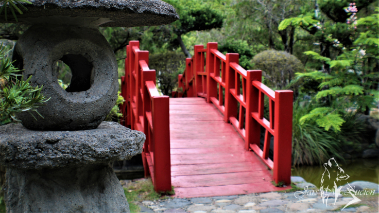

Una Foto Maravillosa

El Jardín Botánico Nacional, Dr. Rafael María Mosoco, fue fundado con la finalidad de estudiar, conservar y manejar la diversa y rica flora de la República Dominicana, creado mediante la Ley 456 de 1976 e inaugurado el 15 de agosto del mismo año. Lleva el nombre del Dr. Rafael María Moscoso como homenaje póstumo al primer botánico dominicano que escribió un catálogo sobre la flora de la Isla Española en 1943. Su emblema es una Hoja de Guanito (Coccothrinax argentea), palma delgada muy abundante dentro del jardín.
Aqui encontraras una serie de hermosas fotografias profecionales, tomasdas a de nuestro Jardin. Esperamos que te gusten.

Se trata del Jardín Japonés, un emblema del paisajismo inspirado en este país nipón, cuyo diseño data del 1976, año en el que el Jardín Botánico también fue inaugurado.
El nuevo Reloj combina naturaleza con artilugio, nos maravilla con la renovación de sus flores en cada estación.
Este espacio natural en los años 60's y principios de los 70's fue un regimiento militar.
Este lugar cercano al iconico Jardin Japones, es donde habitan muchas especies de peces.
Esta es la casa de las distintas especies de mariposas que habitan en el jardin botanico.
El Pabellón de Bromelias “Luis Ariza Julia” es un espacio en el Jardín Botánico Nacional dedicado al cultivo y exhibición de esta familia botánica.
Rafael María Moscoso Puello fue un científico, biólogo, naturalista, botánico, educador, profesor de la Universidad Autónoma de Santo
su Plaza Central, marcada por un diseño que conjuga los ladrillos y piedra que desde la altura se puede apreciar una sutil forma en círculos y rayas de diámetros diferentes.
Algunos de nuestros programas
Nuevo metodo para agilizar los preocesos
Este metodo agiliza por completo, el proceso de resrvas y servicios.
Algunas de los testimonios de nuestros visitantes.

Un lugar para ir a relajarse y pasarlo en familia. Muy tranquilo,bonito y bien cuidado. Económico y adecuado para toda la familia

Es un sitio gigante, quiero felicitar y aplaudir la iniciativa, ojalá que muchos países copiaran este tipo de iniciativas.

Es uno de los mejores lugares para estar en contacto con la naturaleza, tranquilidad, brinda alegría y color.

Uno de los lugares más hermosos en Santo Domingo, contacto único con la naturaleza. Excelentemente cuidado, es económico para ingresar, vale la pena conocerlo.

Un lugar magico donde pasar un tiempo en contacto con la naturaleza, facer un picnic en pareja, amigos y familiares. Uno de los lugares que hay que visitar en Santo Domingo.

Un lugar excelente para compartir en grupo ya sea familiar o amigos, perfecto para tomarse fotos gracias a gran variedad de paisajes que ofrece.
Aqui te dejamos nuestros medios de comunicacion y direccion, no dudes en contactarnos.

Sector los Altos de Galá, Santo Domingo
Tell: (809) 385-2611 Ext. 221
Email:jardinbotanico@jbn.gob.do